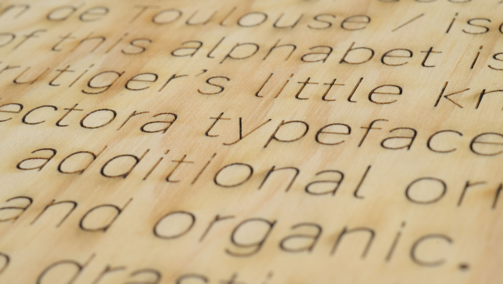
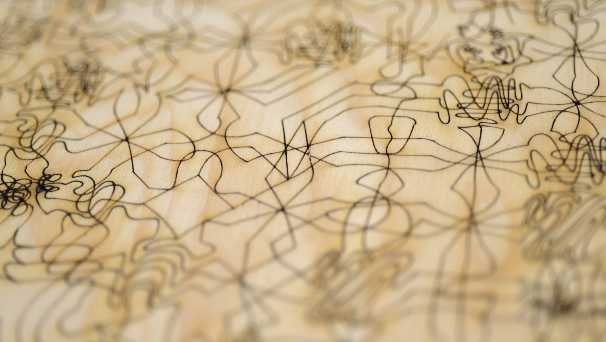

Relief is a robust and versatile sans serif typeface designed for makers and fablabs' environments based on Adrian Frutiger's underrated Vectora. There is a criticly small amount of typographic tools for fablabs and current text tools (such as Hershey fonts on Inkscape or other cutting dedicated softwares such as Make the Cut for example) are hard to use and limited. The existing offer (both commercial like One Line Fonts / OLF and open source) of single strokes fonts is pretty basic and the majority of the fonts are qualitatively deceptive. The field of typographic creation for paper or screen is nowadays largely saturated but strangely enough, the rapidly democratizing domain of fablabs and digital cutting is hardly approached by type designers, an experimentation space practically abandoned to engineers and the “makers” community.
Relief is a pure “central-line” or “stroke font” made with open contours proposed as an UFO file (Unified Font Objects), a cross platform type design format: download the file, then open it in FontLab Pad software (free of use, available for Window and Mac environments), write down your text, then export it as a SVG or PDF vector pattern only composed of skeletal signs that you can open in Inkscape, Illustrator or even Indesign to build your desired composition. Relief is distributed under a Creative Commons license by-nc-nd international (attribution, non commercial, no derivs).
 